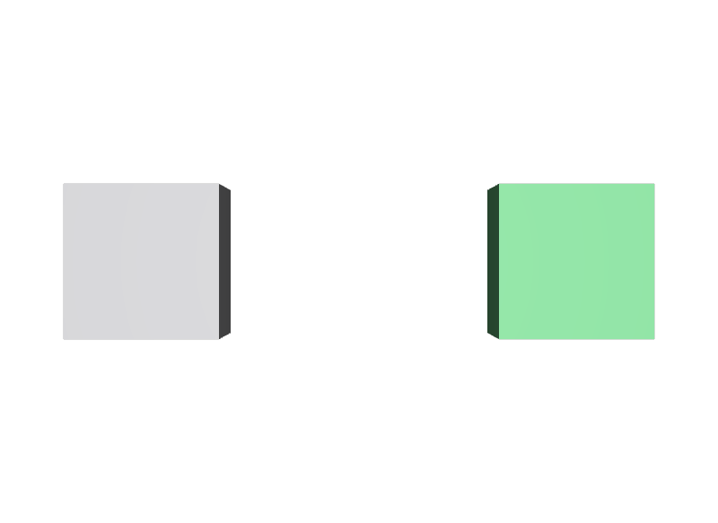

Inheritsを書かずにclassだけ用意する
classは置いただけでは誰にも影響しません。受け取る側がinheritsで指して初めて意見が届きます。
STEP 42 · SPECIFIER
自分は描画されず、他のPrimへ意見を配ります
今日これだけ
公式情報に基づく説明
classは、他のPrimが共通して受け取るための意見をまとめて置く場所を作るSpecifierです。classで書かれたPrimはabstractとして扱われ、Stageを走査する既定の動作からも描画からも外れます。実際に使うときは、STEP 46 InheritsというComposition Arcでそのclassを指し、意見を受け取ります。
USDA
#usda 1.0
(
defaultPrim = "World"
metersPerUnit = 1
upAxis = "Y"
)
class Cube "_HouseStyle"
{
double size = 1
color3f[] primvars:displayColor = [(0.2, 0.7, 0.3)]
}
def Xform "World"
{
def Cube "Plain"
{
double size = 1
color3f[] primvars:displayColor = [(0.6, 0.6, 0.62)]
double3 xformOp:translate = (-1.4, 0, 0)
uniform token[] xformOpOrder = ["xformOp:translate"]
}
def Cube "Styled" (
inherits = </_HouseStyle>
)
{
double3 xformOp:translate = (1.4, 0, 0)
uniform token[] xformOpOrder = ["xformOp:translate"]
}
}_HouseStyleは緑色とsize = 1を持つ型紙です。Styledは自分では色も大きさも書いていませんが、丸括弧の中のinherits = </_HouseStyle>によって、その両方を受け取ります。Plainは型紙を参照していないので、自分で書いた灰色のままです。
結果

Styledが型紙の緑を受け取っています。_HouseStyle自身はCube型で色も大きさも持っていますが、abstractなので描画されません。examples/lesson-27c/specifier-class.usda / Apple USD Tools 0.25.2 のusdrecord（Hydra Storm・Metal）/ macOS 26.5.2・Apple M4確かめる
classのPrimはIsDefined()としてはTrueを返します。走査や描画から外れる理由は、定義されていないからではなくabstractだからです。STEP 41のoverとは、外れる理由が違います。
from pxr import Sdf, Usd
stage = Usd.Stage.Open("specifier-class.usda")
for prim in stage.Traverse():
print(prim.GetPath())
# /World /World/Plain /World/Styled /World/ShotCam … _HouseStyle は出てこない
style = stage.GetPrimAtPath("/_HouseStyle")
print(style.GetSpecifier()) # Sdf.SpecifierClass
print(style.IsDefined()) # True
print(style.IsAbstract()) # True
styled = stage.GetPrimAtPath("/World/Styled")
print(styled.GetAttribute("primvars:displayColor").Get()) # [(0.2, 0.7, 0.3)]
print(styled.GetAttribute("size").Get()) # 1.0Styledには色も大きさも書いていないのに値が取れます。これがInheritsで受け取った意見です。TraverseAll()を使えば/_HouseStyleも一覧に現れます。
Diagram
Python
from pxr import Gf, Sdf, Usd, UsdGeom
stage = Usd.Stage.CreateNew("style.usda")
style = stage.CreateClassPrim("/_HouseStyle")
style.SetTypeName("Cube")
UsdGeom.PrimvarsAPI(style).CreatePrimvar(
"displayColor", Sdf.ValueTypeNames.Color3fArray,
UsdGeom.Tokens.constant).Set([Gf.Vec3f(0.2, 0.7, 0.3)])
UsdGeom.Xform.Define(stage, "/World")
styled = UsdGeom.Cube.Define(stage, "/World/Styled")
styled.GetPrim().GetInherits().AddInherit(Sdf.Path("/_HouseStyle"))
stage.Save()CreateClassPrimがclassのPrimを作ります。受け取る側ではGetInherits().AddInherit(...)で型紙のPathを指定します。InheritsそのものについてはSTEP 46 Inheritsで詳しく扱います。
USDA → Python mapping
USDA
class Cube "_HouseStyle"↓Python
stage.CreateClassPrim("/_HouseStyle") + SetTypeName("Cube")USDA
inherits = </_HouseStyle>↓Python
prim.GetInherits().AddInherit(Sdf.Path("/_HouseStyle"))USDA
（抽象かどうかの確認）↓Python
prim.IsAbstract()Beginner notes
よくある間違い
classは置いただけでは誰にも影響しません。受け取る側がinheritsで指して初めて意見が届きます。
abstractなので描画されないのが正しい動作です。型紙自体を見たいときはTraverseAll()で確認します。
overは同じPathへの上書き、classは別のPathからの受け取りです。効く仕組みがまったく違います。
慣習であって文法上の決まりではありません。ただし従っておくと読み手に親切です。
Glossary
IsAbstract()がTrueを返す。classと組み合わせて使うことが多い。classのPrimを作るPython API。Official references
確認日: